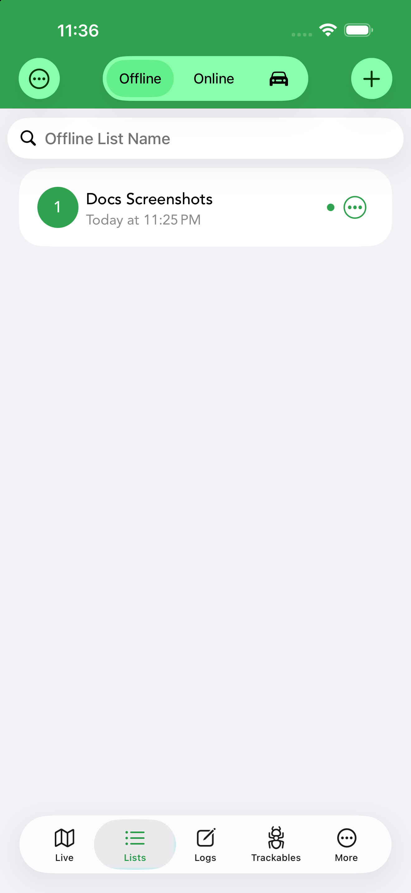
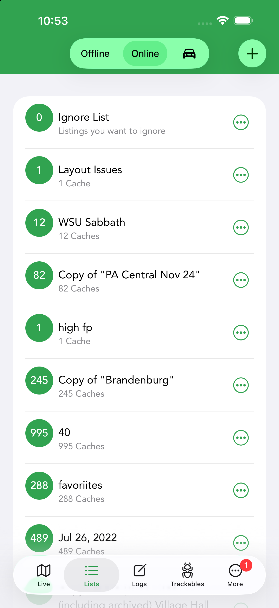
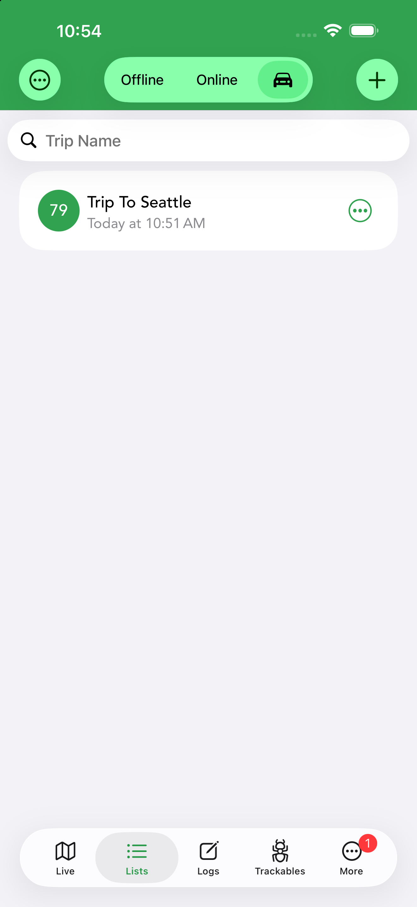
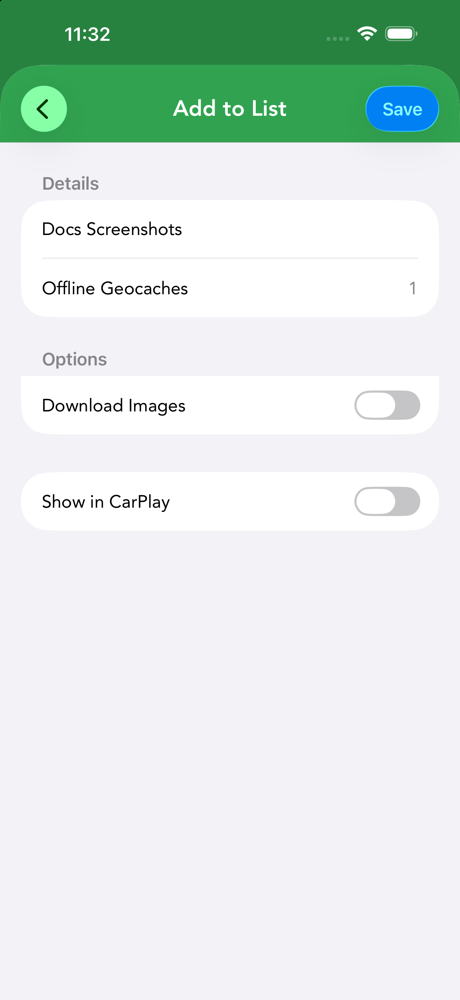
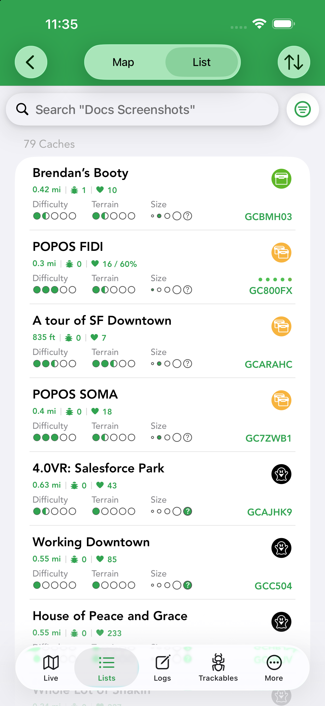
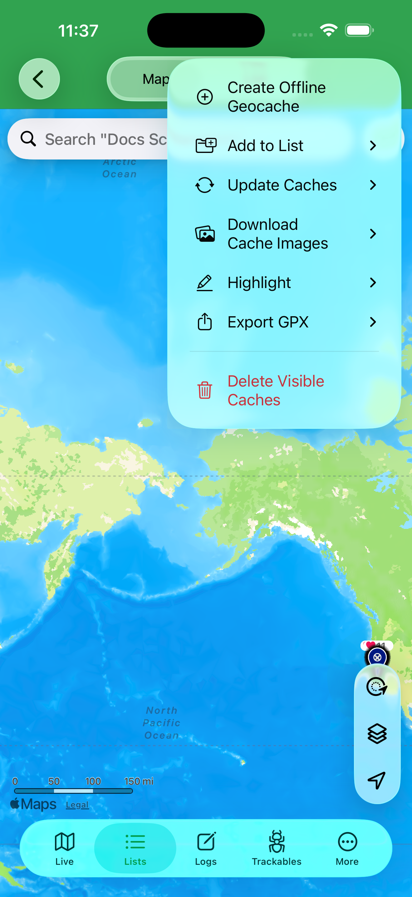

Lists & Offline Sets
Lists keep caches organized; offline sets take it further by downloading caches (and their photos) to your device so you can cache with no signal.






Kinds of lists
The Lists tab is split into three segments across the top:
- Offline (the default) — lists whose caches are downloaded to your device for full offline access. Each row shows the cache count, the list name and when it was created.
- Online — the bookmark lists stored on your geocaching.com account, including your Ignore List, each with its cache count and a per-row … menu. Online lists require a geocaching.com Premium membership and stay in sync with the service.
- Trips (the car icon) — trip lists for planning a route of caches, e.g. “Trip To Seattle”.
Swipe left on any list row to Delete it.
Creating a list
Tap + at the top of the Lists tab. For an offline list you give it a title and can enable Show in CarPlay, which makes the list browsable from your car’s screen in CarPlay PRO. An online list is created with a title and optional description and is saved straight to your geocaching.com account.
Adding caches to a list
There are two main ways to fill a list:
- One cache at a time — on a cache’s detail screen, tap the + button and choose Add to List (the same menu offers Watch and Ignore).
- In bulk from the map — open the map’s … menu, choose Add to List, then pick the scope: All Caches, Visible Caches or Highlighted Caches.
Either way, you then pick the destination list and land on a confirmation screen showing how many geocaches will be saved offline, with two options: Download Images (store the caches’ photos too) and Show in CarPlay.
Offline sets
An offline set stores cache information locally — descriptions, hints, logs, waypoints and (on demand) photos — so everything is available with no internet, perfect for trips without signal. There are three ways to create one:
- Add search results from the Live tab.
- Import an existing online list or pocket query from geocaching.com.
- Import a GPX file received by email or cloud storage.
Browse an offline set on the map using the Offline Lists view type.
Map mode and List mode
Opening an offline list gives you the same two views as the Live tab. Map mode shows the list’s caches as pins with the full map toolset, scoped to just that list. List mode shows a cache-count heading and one row per cache with its distance, D/T, size and GC code.
In list mode, the sort button (up/down arrows) opens the same sort sheet as the live cache list: choose Ascending or Descending, then a sort type — Date Found, Date Last Found, Date Placed, Difficulty, Distance, FTF, Favorite Count, Favorite Percentage, Found, GC Code, Highlight Color and more.
Managing an offline list
In map mode, the … menu at the top right manages the whole list:
- Create Offline Geocache — add a cache of your own to the list.
- Add to List — copy caches into another list (All / Visible / Highlighted Caches).
- Update Caches — refresh the stored cache data from geocaching.com.
- Download Cache Images — fetch photos for caches that were saved without them.
- Highlight — apply a highlight color to the caches.
- Export GPX — export the caches as a GPX file.
- Delete Visible Caches — remove the currently visible caches from the list.
List membership
At the bottom of a cache’s detail screen, List Membership shows when the cache was last saved offline and which offline lists contain it. When a cache is in several lists you can use Edit (or swipe left) to remove it from specific lists while keeping it in the one you opened it from. This applies to caches stored offline.
Filtering offline lists
Offline lists have their own filtering system, far deeper than live search: tap the filter button in list view to stack multiple filters, invert them, and save whole sets as templates. The walkthrough and the complete table of filter options are on Search & Filters.